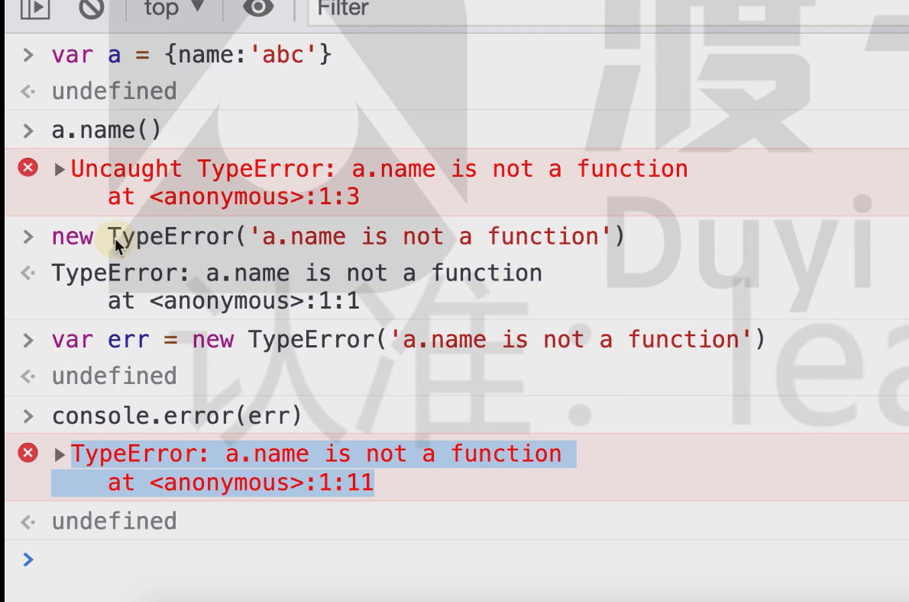

异常并非坏事，它可以让开发人员及时发现错误、定位错误，甚至在某些时候，我们还需要故意的抛出异常
异常的分类
在 JS 中，异常表现为一个对象，不同的对象表达了不同的异常类型，不同类型的异常对应到不同的错误
| 异常类型 | 含义 |
|---|---|
| SyntaxError | 语法错误 |
| ReferenceError | 引用错误，往往是使用了未定义的变量或函数 |
| TypeError | 类型错误，往往是使用了一个对象中不存在的成员 |
每个异常都是一个对象，通过对应的构造函数创建

所有的异常构造器都继承自 Error，更多信息参见MDN
当代码运行过程中出现错误时，JS 会：
- 自动创建对应的异常对象，抛出错误
- 程序终止运行
- 控制台中会显示异常对象
每个异常对象都至少记录了两个关键信息：
- 错误消息描述：描述异常出现的原因
- 调用堆栈信息：描述异常出现的位置
捕获异常
捕获异常就是处理错误，当错误发生后，我们对错误进行相应的处理，让程序不至于终止
try {
// 代码1
} catch (err) {
// 代码2：当代码1出现异常后，会执行这里的代码，异常对象会传递给err
} finally {
// 代码3：可省略。无论是否有异常，都会执行
}
// 无异常的执行顺序：代码1 --> 代码3
// 有异常的执行顺序：代码1 --> 出现异常，中断代码1的执行 --> 代码2 --> 代码3
在绝大部分时候，我们都无须捕获异常，除非满足以下要求：
- 我们能够预知某段代码会出现异常
- 我们知道出现异常后要做什么
上面的条件任意一个不满足，都不应该处理异常
永远不能为了不报错而捕获异常！
下面是一段可能使用异常捕获的伪代码
try {
var heros = network.getHeros(); // 从网络获取王者荣耀英雄数据，得到英雄数组
createHTML(heros); // 将数组生成HTML
} catch (err) {
// 出现网络故障，给用户显示一个提示框
showErrorDialog(
"网络故障，请检查您的网络是否连接正常。故障原因：" + err.message
);
}
手动抛出异常
不仅浏览器会自动给我们抛出异常，我们还可以手动的抛出异常
throw 异常对象; // 当代码运行到这里，会终止执行，抛出异常对象，效果和浏览器抛出的错误完全一样
throw new TypeError("抛出错误");
throw new Error("参数异常");
当编写函数时，如果满足下面三个条件，就可以选择抛出异常：
- 预知执行过程中可能会出现某种错误
- 浏览器不会抛出这个错误
- 该函数无法处理这个错误